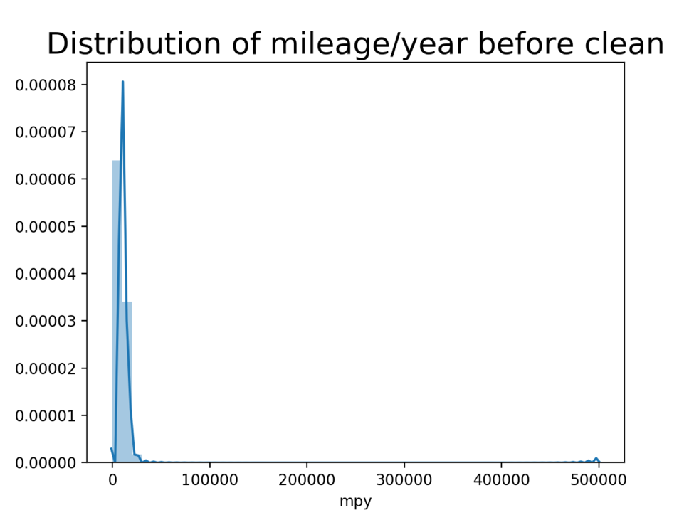
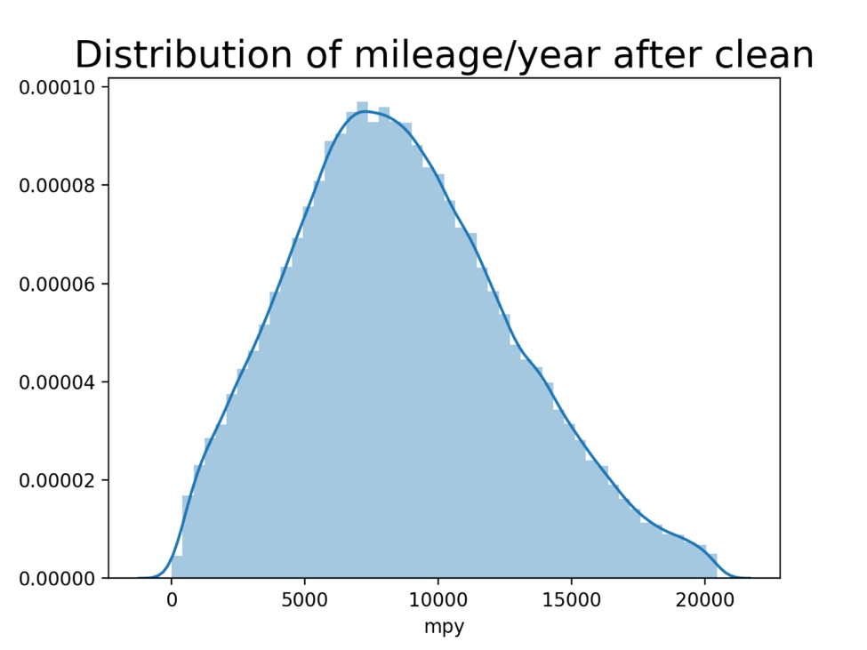
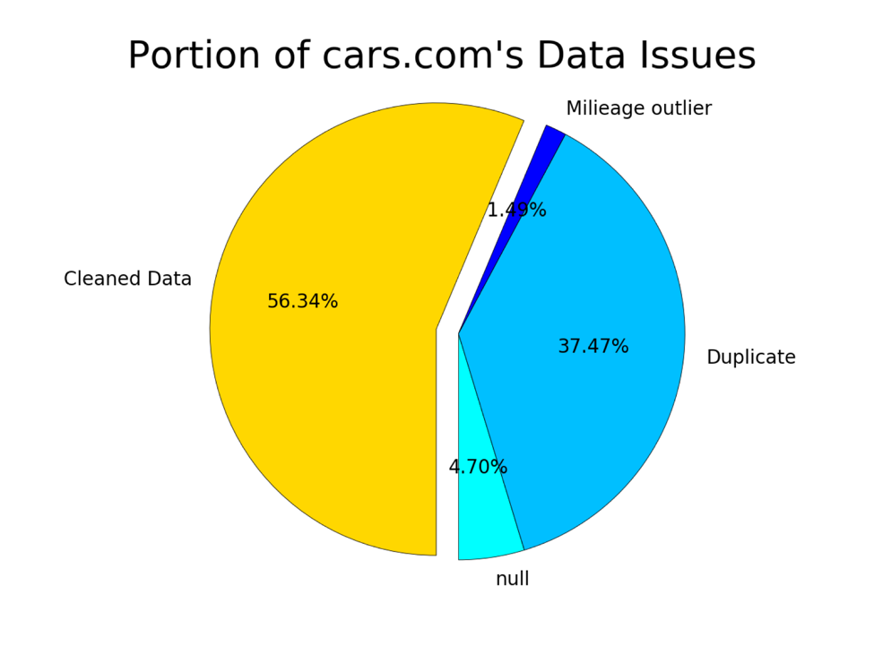

Cars.com Dataset Cleaning
Cars.com dataset was scripted from Cars.com by zip code, which includes 19 features and about 270k records. It has more detailed features like “bodyStyle”, “certified”, “trim” than TrueCar.com dataset — the second used car data set was used by this project.
After dropping null values and duplications, the mileage outliers problem became the most frequent problems in this dataset.
Mileage outliers’ problem includes two subproblems: 1. Mileage is too low. For example, many cars in this dataset have a Mileage lower than 1000 Miles. They are basically new cars, the dealers listed them as used cars may just because they want more customers to see their cars. 2. Mileage is too high. Most of this outliers due to transcription errors, since people wouldn’t record a higher Mileage than the actual Mileage of their cars which could lead to a lower price expectation. It is easy to deal with the low mileage outlier problem, all records with a mileage lower than 1000 are dropped, because those cars are considered new cars which will influence our research of used car market. But as for records with a abnormal high mileage, they can’t be simply deleted since there are many old mobiles do have such a high mileage. To solve this problem, we created a new feature “Mileage per Year”. By using this data, we exclude the influence of years to mileage. The value “Mileage per Year” only depends on people’s habits, some people drive more and some people drive less in a year, so it should have a normal distribution. Here is the distribution graph of value “Mileage per Year” before the mileage outliers were cleaned.
Figure 1.1.1 Distribution of Mileage/Year before Cleaning
code and dataIt is obvious that many outliers exist in this graph. It is impossible for a car runs 500,000 a year. A function Q3+1.5*(Q3-Q1) was introduced to calculate the higher bound, which turned out about 20,000. After records with mileage outliers were dropped, the new graph is here.
Figure 1.1.2 Distribution of Mileage/Year after Cleaning
code and dataFrom the graph, the distribution of “Mileage per Year” is basically a normal distribution as expected.
The overall performance of the data cleaning process is shown in the pie chart.
Figure 1.1.3 Cars.com's Data Issue Types
code and dataThere were about 44% of the original data was cleaned. Around 5% of the whole dataset contains null values. Around 37% of the whole dataset are duplications, which is reasonable. Because this dataset was scripted by zip code from cars.com, many zip codes are locations close to each other, it is highly possible for the same car appears several times in the results of close zip codes when cars.com applied the best match algorithm. Besides, with the help of new adding feature “Mileage per Year”, there are around 1.5% of the whole records were cleaned, which is significant.